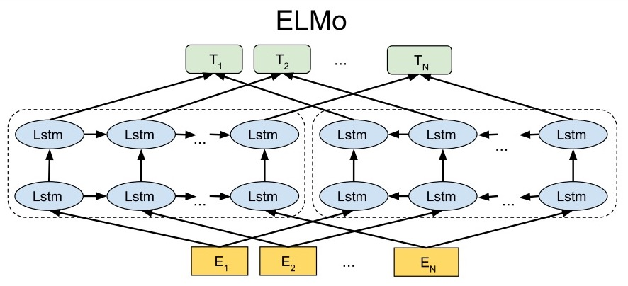
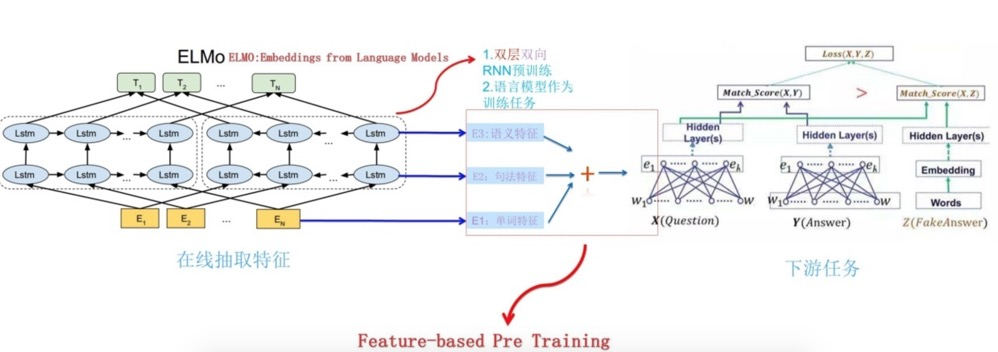

ELMo (Embeddings from Language Models)
Word2Vector的词向量对于多义词无法太好的分辨，ELMo为了解决这个问题加入了能够利用文本顺序的结构。 另外，Word2Vector是将预训练后的词向量作为特征提供给下游模型，而ELMo是对整个输入句子的表达，然后将这个表达加入到特征中（有点像提供了一个函数，这个函数对整个句子进行描述，产生向量，给下游使用）。
结构
Bidirectional language models (bi-LM)
bi-LM其实就是分成两个分支，一个提取前向特征，一个提取后向特征，下图展示了这一过程：

我们将这个过程公式化，给定一个包含N个token的序列：\((t_1, t_2, ..., t_N)\)，前向的语言模型每次根据历史的词\((t_1, ..., t_{k-1})\)预测下一个词\(t_{k}\)，那么输出整个序列的概率就是：
\[p(t_1, t_2, ..., t_N) = \prod\limits^N_{k=1} p(t_k \mid t_1, ..., t_{k-1})\]假设这个前向的语言模型使用的是\(L\)层的LSTM，那在第\(j\)层第\(k\)个位置的词的隐向量为\(\overrightarrow{h}^{LM}_{k,j}\)
类似的，反向的语言模型每次根据未来的词\((t_{k+1}, ..., t_N)\)预测前一个词\(t_k\)，那么输出整个序列的概率就是：
\[p(t_1, t_2, ..., t_N) = \prod\limits^N_{k=1} p(t_k \mid t_{k+1}, ..., t_{N})\]对应的隐向量为\(\overleftarrow{h}^{LM}_{k,j}\)
最后，bi-LM需要将这两部分合并起来，最大似然函数是：
\[\sum\limits^N_{k=1} \left( \log p(t_k \mid t_1, ..., t_{k-1}; \Theta_x, \overrightarrow{\Theta}_{LSTM}, \Theta_S) + \log p(t_k \mid t_1, ..., t_{k-1}; \Theta_x, \overleftarrow{\Theta}_{LSTM}, \Theta_S) \right)\]其中，\(\Theta_x\)是token的表达，\(\Theta_S\)是输出token的softmax参数的表达，前向和后向的LSTM的分开的。
ELMo
ELMo将bi-LM的中的表达合并后给下游使用。对于一个\(L\)层的bi-LM，总共有\(2L+1\)个表达：
\[\begin{align} R_k &= \left\{ x^{LM}_k, \overrightarrow{h}^{LM}_{k,j}, \overleftarrow{h}^{LM}_{k,j} \mid j = 1,...,L \right\} \\ &= \left\{ h_{k,j}^{LM} \mid j = 0,...,L \right\} \\ \end{align}\]其中，\(h^{LM}_{0,k}\)就是最开始token的表达，\(h_{k,j}^{LM} = \left[ \overrightarrow{h}^{LM}_{k,j} ; \overleftarrow{h}^{LM}_{k,j} \right]\)将两个方向的隐向量进行了拼接
然后，ELMo将中间所有的表达拿出来进行加权给下游使用（当然也可以只拿一分部，没拿的部分相当于权重是0），图示如下：

公式化后为：
\[ELMo_k^{task} = \gamma^{task} \sum\limits^L_{j=0} s_j^{task} h_{k,j}^{LM}\]其中，\(s_j^{task}\)是softmax后的权重，这个是学习到的，\(\gamma^{task}\)是缩放因子，是一个超参，调整特征向量的尺度。这样就得到了一个加权后的向量作为下游的特征。
用于下游任务
假设下游任务有自己的结构提取句子的特征，可以是不带上下文信息的特征（比如word2vec），可以是带上下文信息的特征（比如RNN、CNN的输出）。将ELMo的参数冻住，然后将ELMo的输出和原本的特征拼接起来后作为新的特征。
预训练bi-LM
时间中ELMo选取了两层LSTM，然后第二层做了个残差网络。其他的参数我没有特别的理解，感觉需要看一下引用的论文，后面再补充。
TODO
- 补充预训练bi-LM部分